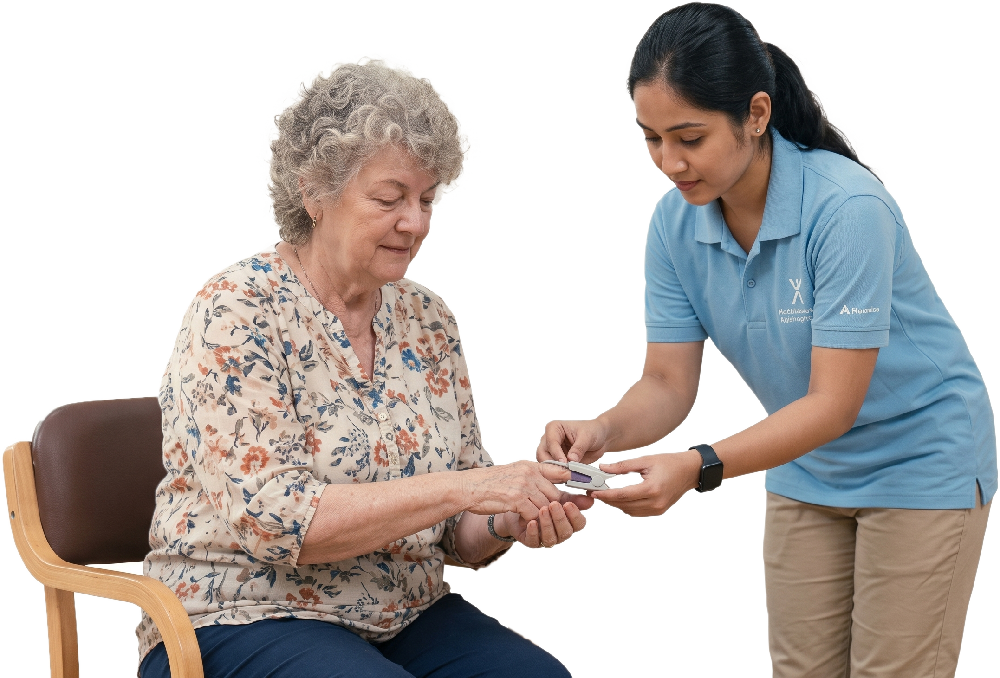

Transition Care bridges the critical gap between inpatient hospital discharge and a safe return to independent living or long-term home care. It provides structured, short-term skilled medical support designed to prevent hospital readmissions and promote complete recovery.
At Asthra Senior Living Home, our transition care services in Chennai ensure that seniors receive tailored clinical oversight, rehabilitative therapy, and continuous personal assistance during their vital recovery window.
Whether recovering from acute illnesses, joint replacement, cardiac events, or major surgeries, our multidisciplinary team coordinates every phase of care—from medication administration and vitals monitoring to mobility training and nutritional therapy.
Choose Asthra Senior Living Home for reliable, compassionate transitional care that gives family members peace of mind and empowers seniors to regain their strength safely.


Every recovery journey is unique. Asthra Senior Living Home creates custom step-down recovery plans aligned with your doctor's recommendations, complete with: